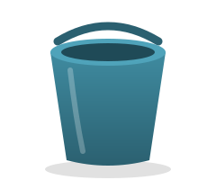

Wszystko, co powinieneś wiedzieć o wiadrach
Napisał Jan Kowalski · 1 kwietnia 2026 · 7 minut czytania

Wiadro to najbardziej niedoceniany wynalazek ludzkości. Bez niego nosilibyśmy wodę w dłoniach, a to, jak wiadomo, kończy się mokro. W tym artykule dowiesz się absolutnie wszystkiego, czego o wiadrach nie odważyłeś się zapytać.
Uprzedzamy: po lekturze nie spojrzysz już tak samo na żadne naczynie w swojej piwnicy.
Czym właściwie jest wiadro?
Wiadro to pojemnik, którego jedynym celem w życiu jest bycie pełnym, gdy chcesz je opróżnić, i pustym, gdy potrzebujesz je pełne. Naukowcy nazywają to paradoksem wiadra.
W przeciwieństwie do kubka, wiadro nie udaje, że jest eleganckie. Jest szczere. Jest surowe. Jest wiadrem.
Anatomia wiadra
Każde szanujące się wiadro składa się z kilku kluczowych części.
Pałąk
Metalowy kabłąk, dzięki któremu możesz nieść wiadro jedną ręką i narzekać na wagę drugą.
Dno
Najważniejsza część. Wiadro bez dna to już nie wiadro, tylko przereklamowany komin.
Rodzaje wiader
Wiadra dzielimy na budowlane, ogrodowe oraz te, które kupiłeś w promocji i nie wiesz po co. Ostatnia kategoria jest najliczniejsza.